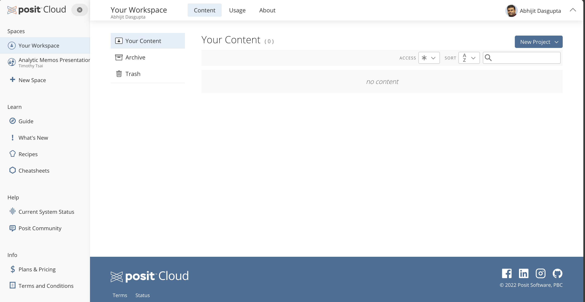
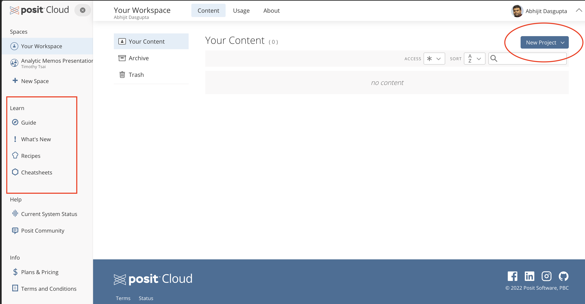

Software for the class
The primary software we will use for class is . This is an industry-standard statistical analysis platform with a very large supportive ecosystem of packages for particuar analytic purposes.
Accessing R
Using R in the browser
The no-installation method to using R and RStudio is to get an account on Posit Cloud, which will enable you to use R in your web browser. You can get a free account, which should generally suffice for learning . Once you login, you should see something like this:

The two things you want to pay attention to here are highlighted below:

We will organize ourselves in RStudio Projects. This is a generally good practice for dealing with data science projects, and we’ll discuss this in class
On the left you have access to several learning guides for self-learning .
Using R on your laptop
We are going to use through the Integrated Development Environment (IDE) called RStudio. Note that and RStudio are two different things. You need to install first, and then install RStudio.
You can use other IDEs like Positron or Visual Studio, or even a plain text editing software, but for this class, we will use RStudio
Install R
At the very top, follow the link to download and install for your operating system
- Note that there are two versions of for the Mac: the Apple Silicon version for those with a M1, M2, M3, M4 Mac, and the Intel version for older Macs. Install as appropriate
Installing RStudio
Download the appropriate version of RStudio for your operating system from https://posit.co/download/rstudio-desktop/
Install RStudio on your computer
Open RStudio
On a Windows machine you can open RStudio from the Start () menu
On a Mac, you can search for RStudio using Searchlight (
+ Space)
Rstudio will pick up your current installation and run it within RStudio.
Other GUI-based software running
Robert Muenchen provides a comprehensive review of GUI-based software running here
Bluesky
Bluesky is a GUI-based software that runs as the computational engine. It allows a menu- and GUI-driven use of that is quite nice. It also produces the code that it is running for a particular operation, so you can both learn and reproduce the analyses independent of Bluesky
ExploratoryIO
ExploratoryIO is an online statistical platform also using as the computational engine. It has quite a nice UI. The free version has you download an app that will work on your desktop but only when you’re online.
jamovi
jamovi is another free GUI-based statistical analysis platform that uses as the computational engine. Much like Bluesky, you can also get the code that is used for particular analyses. You can download jamovi here or run it in your browser without downloads or installation.
JASP
We will occasionally use JASP for menu-driven graphs and analyses. JASP runs in the background as its engine, and so the outputs generally will be quite compatible with what we’ll do in .
- Download JASP from https://jasp-stats.org/download/ and install the appropriate version to your computer